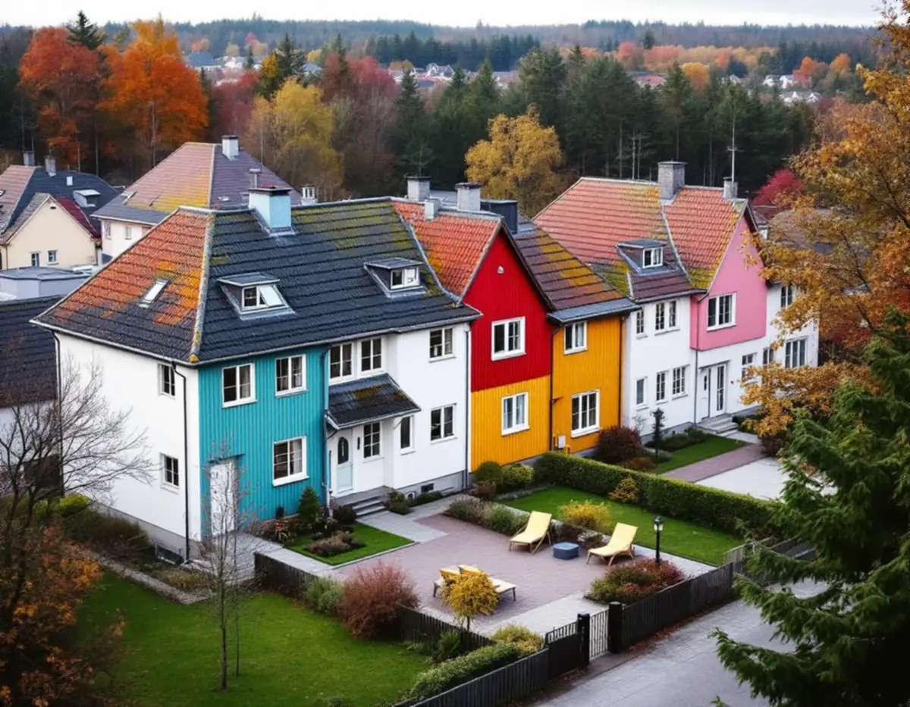
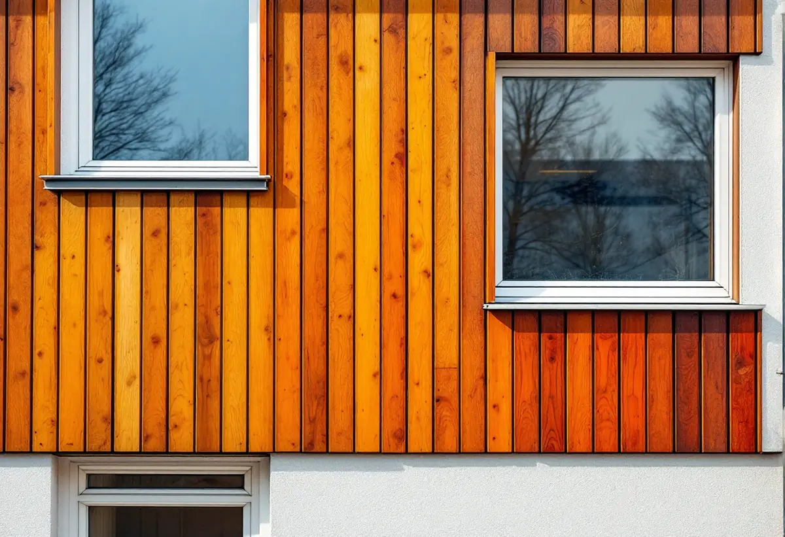

Område och byggår
Vi tar reda på om huset ligger i ett av de utpekade områdena och när det byggdes.
Upplands Väsbys kunskapsunderlag för kulturmiljö pekar ut flera småhusområden från 1970- och 80-talen som särskilt värdefulla, däribland Grimstaby och områdena från bomässan Bo 85. Där ska både material och färgskala behållas när fasaden renoveras. Geal Entreprenad AB renoverar fasader i Grimstaby, Runby, Bollstanäs och övriga Upplands Väsby, med gratis platsbesök och skriftligt kostnadsförslag.

Grimstaby byggdes 1975–77 och ritades av Brunnberggruppen. Kommunens kunskapsunderlag för kulturmiljö från 2025 beskriver området som ett uttryck för 1970-talets nya ideal och en tydlig motreaktion mot miljonprogrammet, med bostadsgårdar längs ett i huvudsak bilfritt stråk, radhus främst i en våning och några högre flerbostadshus. Taken är branta sadeltak med betongpannor.
Fasaderna varierar mellan trä och puts, och trädetaljerna har en kontrasterande kulör mot putsen. Panelens riktning och indelning används som dekorativt element, och starka kulörer kombineras med pastell. Hela området hålls ihop av en gemensam färgskala.
Grimstaby räknas i underlaget som ett särskilt värdefullt bebyggelseområde enligt plan- och bygglagen. Vägledningen säger att färgskalorna ska underhållas och behållas, och att tillägg som ombyggnad av tak, nya takkupor eller nya dörrar och fönster inte ska tillåtas. Byts panel på ett av radhusen behöver den därför få samma riktning, samma indelning och samma bredd som tidigare, och om kulören finns mer under målare i Upplands Väsby.

Bo 85 i Upplands Väsby var enligt kunskapsunderlaget den första renodlade bostadsmässan i Sverige, med temat Bygg för gemenskap. Vid Lövstavägens slut i Runby Backar lät Byggforskningsrådet bygga ett tjugotal småhus och villor, en blandning av prefabricerade och arkitektritade hus. Underlaget räknar den särpräglade materialkombinationen till det som bör bevaras.
I Carlslund beskrivs en lekfull arkitektur med lätta material som trä, plåt och glas tillsammans med ljus puts i pastellkulörer som turkos, gul, rosa och mintgrön. Den östra delen har en upprepad hustyp med faluröd träpanel. Vägledningen säger att områdets experimentella uttryck med glas, aluminium, kakel och puts ska vårdas.
En fasad från en bostadsmässa kan vara svår att matcha om ett material inte längre finns att köpa. Vi dokumenterar därför profiler och skivformat innan något tas ner. Gäller arbetet även taket finns mer under takrenovering i Upplands Väsby.
Boverket skriver att användningen av asbest förbjöds inom byggsektorn 1982, och att det främst är byggnader från 1940 till 1970 som innehåller asbest, men att den kan finnas även i äldre hus. Bedömningen börjar med byggåret och tidigare renoveringar. Ett radhus i Grimstaby från 1975–77 bör därför provas innan skivor eller fogar tas bort, medan ett hus från bomässan 1985 är byggt efter förbudet.
En annan risk i hus från den här tiden är fukt. Boverket beskriver hur vatten som tar sig förbi det enda tätande lagret på en enstegstätad fasad hamnar inne i väggen och bara kan torka ut långsamt. En luftspalt bakom panelen gör att vatten som kommer förbi kan rinna ut igen, och vid fönster saknas ofta vattenavledning mellan karm och omfattning.
Vid besöket kontrollerar vi därför fogar, fönsteranslutningar och om panelen har en luftspalt bakom sig. Saknas luftspalten kan den byggas in när panelen ändå byts.
Upplands Väsby kommun skriver att en- och tvåbostadshus i normala fall inte behöver bygglov för fasadändringar, varken inom eller utanför detaljplan. Ligger huset i ett kulturhistoriskt särskilt värdefullt område krävs däremot bygglov, och detsamma gäller om detaljplanen har utökad lovplikt. Kunskapsunderlaget visar vilka områden kommunen räknar som särskilt värdefulla.
En anmälan ska lämnas in om nya fönster eller dörrar innebär ingrepp i stommen. Kommunen påpekar också att solceller inom detaljplan kräver bygglov i hela kommunen, eftersom den ligger inom riksintresse för väderradar. Varsamhetskravet gäller även när inget lov behövs. Mer om material och metoder står på sidan om fasadrenovering.
Vi tar reda på om huset ligger i ett av de utpekade områdena och när det byggdes.
Panelens riktning, bredd och kulörer fotograferas och mäts innan något rivs.
Fogar och skivor i hus från före förbudet provas för asbest.
Byte, lagning och luftspalt redovisas var för sig, med material angivna.
Panelen sätts upp med luftspalt, och anslutningarna vid fönster görs om.
Vi går runt huset och jämför med grannhusen i gruppen.
För ett småhus med äganderätt ger både fasadbyte, fasadreparation, tilläggsisolering och fasadmålning rotavdrag. Är radhuset en bostadsrätt räknas fasaden som gemensam yta, och då ger arbetet inget rotavdrag.
Avdraget är 30 procent av arbetskostnaden, högst 50 000 kr per person och år och högst 75 000 kr tillsammans med rutavdrag. Material och resor ingår inte. Geal drar avdraget direkt på fakturan.
Hur stor del av panelen eller putsen som behöver bytas, om ett särskilt material måste letas fram, om provtagning och sanering behövs och hur många fönsteranslutningar som ska göras om. Ett gratis platsbesök följs av ett skriftligt kostnadsförslag.
Puts, panel och tilläggsisolering.
Fasadrenovering i Stockholm →Takbyte, takbesiktning och plåtarbeten.
Takläggare i Upplands Väsby →Bollstanäs, Vilunda och Runby.
Takrenovering i Upplands Väsby →Radhus, suterräng och samfälld VA.
Badrumsrenovering i Upplands Väsby →Karta, VA och tomtgräns.
Byggföretag i Upplands Väsby →Inflygning, trafik och tystare fönster i Väsby.
Fönsterbyte i Upplands Väsby →Kedjehus, suterräng och radon.
Golvläggare i Upplands Väsby →Radhus, kedjehus och atriumhus.
Köksrenovering i Upplands Väsby →Radhus, kedjehus och villor i Väsby.
Målare i Upplands Väsby →Rännor, stuprör och radhusplåt i Väsby.
Plåtslagare i Upplands Väsby →Altan, plank och förråd vid radhus och kedjehus.
Snickare i Upplands Väsby →